Capítulo 4 Estimación de densidades con Bayes
4.1 Introducción a la estimación Bayesiana
4.1.1 Preliminares
Recordemos que tenemos \(f(\theta)\) la previa, \(L(\theta)\) la verosimilitud de los datos y \(f(\theta|\text { data })\) la posterior ajustada a los datos.
\[\begin{equation*} f(\theta | \text { data }) \propto f(\theta) L(\theta) \end{equation*}\]
Además para el caso de la binomial tenemos que
\[\begin{equation*} f(y | \theta)=\theta^{\gamma}(1-\theta)^{(1-\gamma)} \end{equation*}\]
y la distribución beta se escribe de la forma
\[\begin{align*} f(\theta | a, b) & =\operatorname{beta}(\theta | a, b) \\ & =\theta^{(a-1)}(1-\theta)^{(b-1)} / B(a, b) \end{align*}\]
donde
\[\begin{equation*} B(a, b)=\int_{0}^{1} \theta^{(a-1)}(1-\theta)^{(b-1)}\mathrm{d} \theta. \end{equation*}\]
Los valores de \(a\) y \(b\) controlan la forma de esta distribución

Tomado de Kruschke (2014)
Una forma alternative es \(\mu=a /(a+b)\) es la media, \(\kappa=a+b\) es la concentración y \(\omega=(a-1) /(a+b-2)\) es la moda de la distribución Beta, entonces se cumple que
\[\begin{align*} & a=\mu \kappa \quad \text { y } \quad b=(1-\mu) \kappa \\ & a=\omega(\kappa-2)+1 \quad \text { y } \quad b=(1-\omega)(\kappa-2)+1 \text { para } \kappa>2 \end{align*}\]
Es decir, es posible estimar \(a\) y \(b\) de \(\kappa\), \(\mu\) y \(\omega\)
De acuerdo la combinación de estas dos distribuciones forma una familia conjugada de modo que
\[\begin{align*} f(\theta | z, N) & = f(z, N | \theta) f(\theta) / f(z, N) \quad \\ & = \theta^{z}(1-\theta)^{(N-z)} \frac{\theta^{(a-1)}(1-\theta)^{(b-1)}}{B(a, b)} / p(z, N) \\ & = \theta^{z}(1-\theta)^{(N-z)} \theta^{(a-1)}(1-\theta)^{(b-1)} /[B(a, b) p(z, N)] \\ & = \theta^{((z+a)-1)}(1-\theta)^{((N-z+b)-1)} /[B(a, b) p(z, N)] \\ & = \theta^{((z+a)-1)}(1-\theta)^{((N-z+b)-1)} / B(z+a, N-z+b) \end{align*}\]
4.1.2 Ejemplo sencillo
Suponga que se hace una encuesta a 27 estudiantes y se encuentra que 11 dicen que duermen más de 8 horas diarias y el resto no. Nuestro objetivo es encontrar inferencias sobre la proporción \(p\) de estudiantes que duermen al menos 8 horas diarias. El modelo más adecuado es
\[ f(x \vert p) \propto p^s (1-p)^f \]
donde \(s\) es la cantidad de estudiantes que duermen más de 8 horas y \(f\) los que duermen menos de 8 horas.
Una primera aproximación para la previa es usar una distribución discreta. En este caso, el investigador asigna una probabilidad a cierta cantidad de horas de sueño, según su experiencia. Así, por ejemplo:
## [1] 0.05 0.15 0.25 0.35 0.45 0.55 0.65 0.75 0.85 0.95## [1] 1.0 5.2 8.0 7.2 4.6 2.1 0.7 0.1 0.0 0.0## [1] 0.034602076 0.179930796 0.276816609 0.249134948 0.159169550 0.072664360
## [7] 0.024221453 0.003460208 0.000000000 0.000000000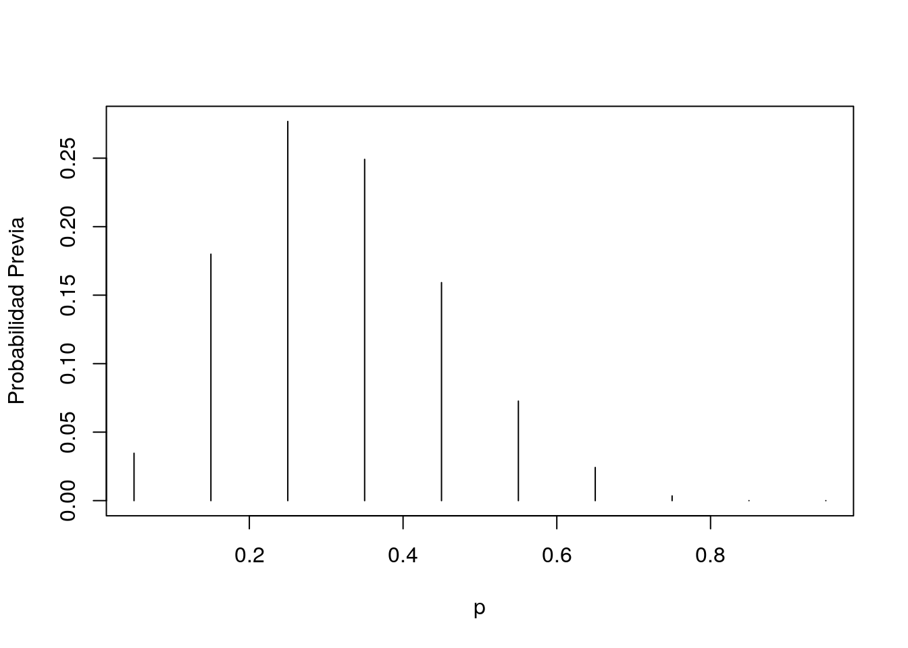
El paquete LearnBayes tiene la función pdisc que estima la
distribución posterior para una previa discreta binomial. Recuerde que
el valor 11 representa la cantidad de estudiantes con más de 8 horas
de sueño y 16 lo que no duermen esa cantidad.
## p prior post
## [1,] 0.05 0.03 0.00
## [2,] 0.15 0.18 0.00
## [3,] 0.25 0.28 0.13
## [4,] 0.35 0.25 0.48
## [5,] 0.45 0.16 0.33
## [6,] 0.55 0.07 0.06
## [7,] 0.65 0.02 0.00
## [8,] 0.75 0.00 0.00
## [9,] 0.85 0.00 0.00
## [10,] 0.95 0.00 0.00Y podemos ver la diferencia entre la previa (negro) y la posterior (roja),
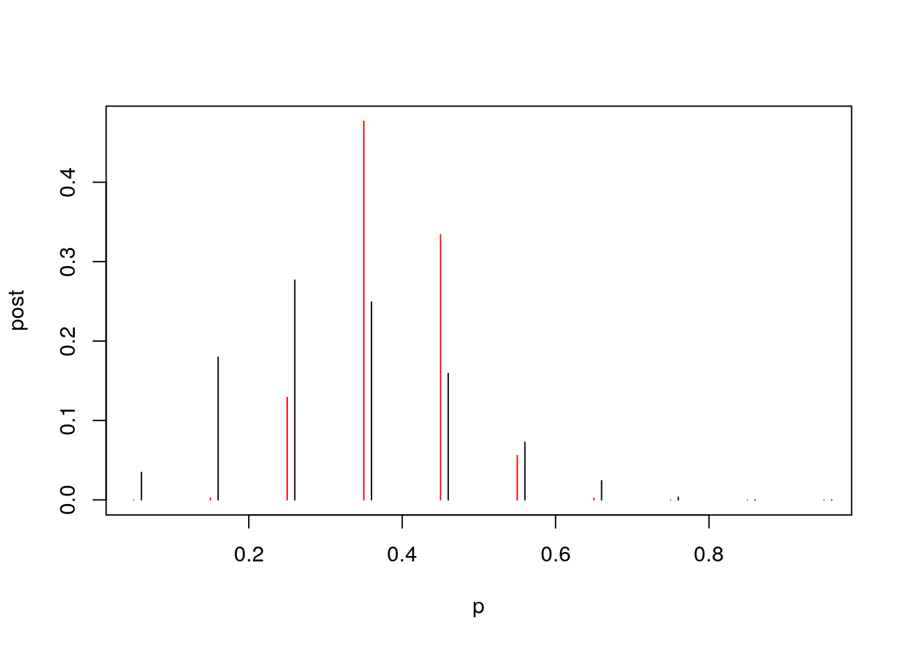
¿Qué se puede deducir de estos resultados?
4.1.3 Datos reales
Continuemos el ejercicio pero esta vez usando datos reales.
Carguemos los datos studdendata del paquete LearnBayes. Esta base
son preguntas que se le hicieron a un grupo de estudiantes de Bowling
Green State University. Para mayor información use ?studentdata.
Como solo se tiene la hora de dormir y la hora de despertarse, se debe tomar la diferencia.
horas_sueno <- studentdata$WakeUp - studentdata$ToSleep
horas_sueno <- na.omit(horas_sueno)
summary(horas_sueno)## Min. 1st Qu. Median Mean 3rd Qu. Max.
## 2.500 6.500 7.500 7.385 8.500 12.500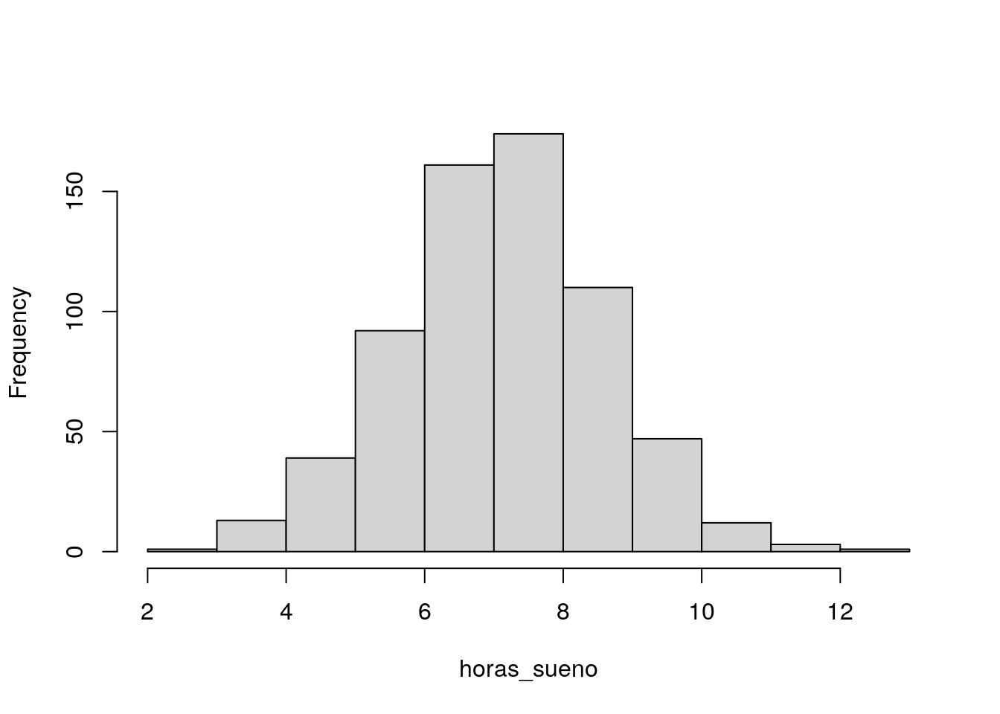
Ahora supongamos que se tiene quiere ajustar una previa continua a este modelo. Para esto usaremos una distribución Beta con parámetros \(\alpha\) y \(\beta\), de la forma
\[ f(p\vert \alpha, \beta) \propto p^{1-\alpha} (1-p)^{1-\beta}. \]
El ajuste de los parámetros de la Beta depende mucho de la información previa que se tenga del modelo. Una forma fácil de estimarlo es a través de cuantiles con los cuales se puede reescribir estos parámetros. En particular, suponga que se cree que el \(50\%\) de las observaciones la proporción será menor que 0.3 y el \(90\%\) será menor que 0.5.
Para esto ajustaremos los siguientes parámetros
quantile2 <- list(p = 0.9, x = 0.5)
quantile1 <- list(p = 0.5, x = 0.3)
ab <- beta.select(quantile1, quantile2)
a <- ab[1]
b <- ab[2]
s <- 11
f <- 16En este caso se obtendra la distribución posterior Beta con paramétros \(\alpha + s\) y \(\beta + f\),
curve(dbeta(x, a + s, b + f), from = 0, to = 1, xlab = "p",
ylab = "Densidad", lty = 1, lwd = 4)
curve(dbeta(x, s + 1, f + 1), add = TRUE, lty = 2,
lwd = 4)
curve(dbeta(x, a, b), add = TRUE, lty = 3, lwd = 4)
legend(0.7, 4, c("Previa", "Verosimilitud", "Posterior"),
lty = c(3, 2, 1), lwd = c(3, 3, 3))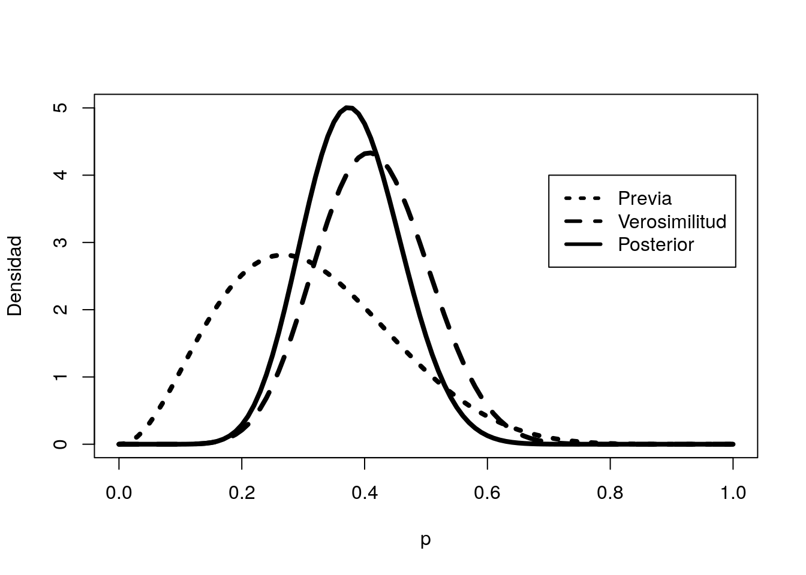
En particular, si estamos interesados en \(\mathbb{P}(p>=.5 | \text { data })\) se puede estimar con
## [1] 0.0690226y el intervalo de confianza correspondiente a esta distribución sería
## [1] 0.2555267 0.5133608Otra opción para estimar este intervalo es simular 1000 veces la distribución beta y observar su comportamiento en los cuantiles

La probabilidad que este valor sea mayor que 0.5 es
## [1] 0.065## 5% 95%
## 0.2571102 0.51028564.2 Previa de histograma
El caso anterior funciona perfecto dada la combinación Binomial-Beta.
¿Qué pasaría si nuestra previa no está basada beta, sino que quisiéramos extraerla directamente de los datos?
El método que usaremos será el siguiente:
- Elija una cuadrícula de valores de \(p\) sobre un intervalo que cubra la densidad posterior.
- Calcule el producto de la probabilidad \(L (p)\) y el \(f (p)\) sobre esa grilla.
- Normalice dividiendo cada producto por la suma de los productos. En esto paso, estamos aproximando la densidad posterior por una probabilidad discreta Distribución en la grilla.
- Usando el comando
sampledeR, tome una muestra aleatoria con reemplazo de la distribución discreta.
El resultado nos debe arrojar una muestra de la distribución posterior sobre la grilla
Suponga nuevamente que tenemos las mismas previas dadas al inicio del capítulo
midpt <- seq(0.05, 0.95, by = 0.1)
prior <- c(1, 5.2, 8, 7.2, 4.6, 2.1, 0.7, 0.1, 0, 0)
prior <- prior/sum(prior)Con la función histprior construye los valores de \(p\) sobre una
grilla.
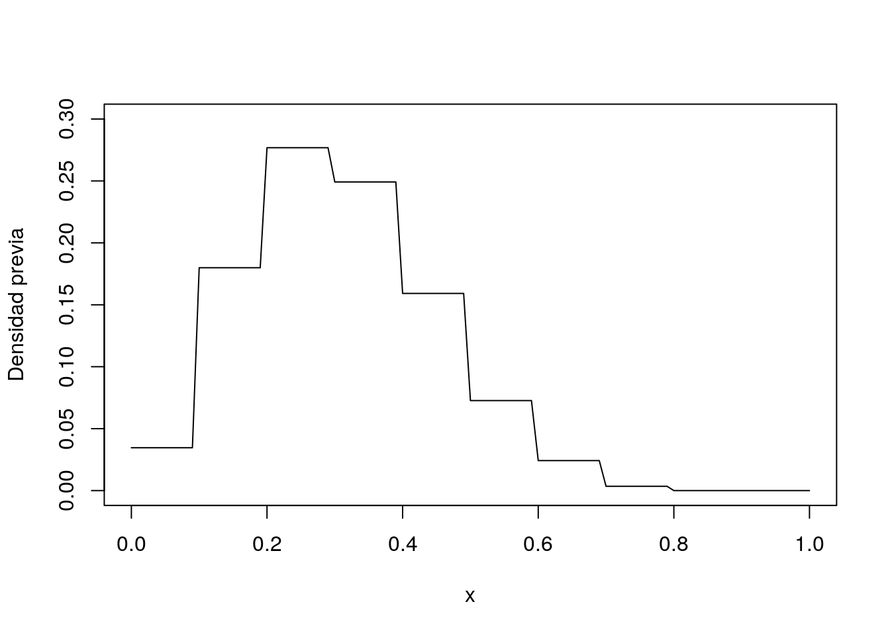
Luego recordando que nuestra posterior es \(beta(s+1,f+1)\) tenemos que
curve(histprior(x, midpt, prior) * dbeta(x, s + 1,
f + 1), from = 0, to = 1, ylab = "Densidad posterior")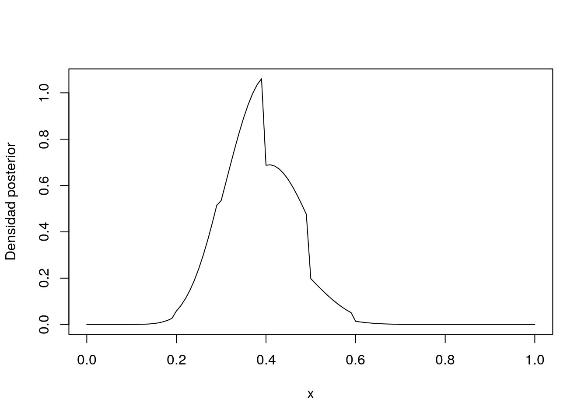
Para conseguir la distribución posterior, solo debemos de construirla para una secuencia ordenada de valores \(p\)
p = seq(0, 1, length = 1000)
post = histprior(p, midpt, prior) * dbeta(p, s + 1,
f + 1)
post = post/sum(post)Finalmente basta con tomar el muestreo de la posterior
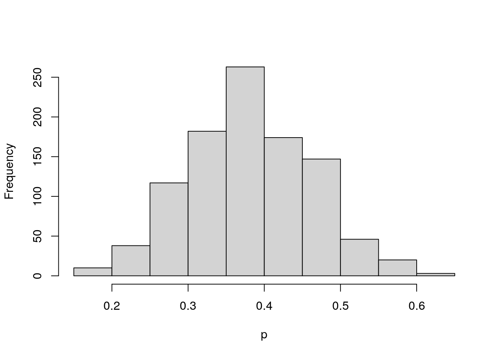
4.3 Monte Carlo methods
El tratamiento clásico de la estimación de parámetros bayesiana nos dice que si tenemos una densidad previa y la ``combinamos’’ con la verosimilitud de los datos, estos nos dará una densidad con más información. Se podría repetir el proceso varias veces para tratar de ajustar mejor la densidad posterior.
Sin embargo, se podría usar potencia de los métodos Monte Carlo para que esta búsqueda sea muy efectiva para encontrar los parámetros adecuados.
4.4 Ejemplo del viajero
Suponga que tenemos un viajero que quiere estar en 7 lugares distintos (suponga que están en línea recta) y la probabilidad de pasar a un lugar a otro se decide tirando una moneda no sesgada (50% a la derecha y 50% a la izquierda).
Este caso sería una simple caminata aleatoria sin ningún interés en particular.
Suponga además, que el viajero quiere estar más tiempo donde haya una mayor cantidad de personas \(P\) pero siguiendo ese patrón aleatorio. Entonces la forma de describir su decisión de moverse sería:
| Tira la moneda y decide si va a la izquierda o la derecha | |
| Tiene dos opciones | |
| Si el lugar nuevo tiene MÁS personas que el actual salta a ese lugar |
Si el lugar nuevo tiene MENOS personas entonces calcula la probabilidad de moverse como \(p_{moverse} = P_{nuevo}/P_{actual}\). |
P <- 1:7
pos_actual <- sample(P, 1)
pos_nueva <- pos_actual
n_pasos <- 50000
trayectoria <- numeric(n_pasos)
trayectoria[1] <- pos_actual
for (k in 2:n_pasos) {
# Tira la moneda para decidir
moneda <- rbinom(1, 1, 0.5)
# moneda es 0 o 1
pos_nueva <- pos_actual
if (moneda == 1 & (pos_actual + 1) <= 7) {
pos_nueva = pos_actual + 1
} else if (moneda == 0 & (pos_actual - 1) >= 1) {
pos_nueva <- pos_actual - 1
}
p_moverse <- min(pos_nueva/pos_actual, 1)
hay_movimiento <- 1 - p_moverse <= runif(1)
if (hay_movimiento) {
pos_actual <- pos_nueva
}
trayectoria[k] <- pos_nueva
}df <- data.frame(x = 1:n_pasos, P = trayectoria)
ggplot(df[1:200, ]) + geom_line(aes(x, P)) + coord_flip() +
theme_minimal(base_size = 16)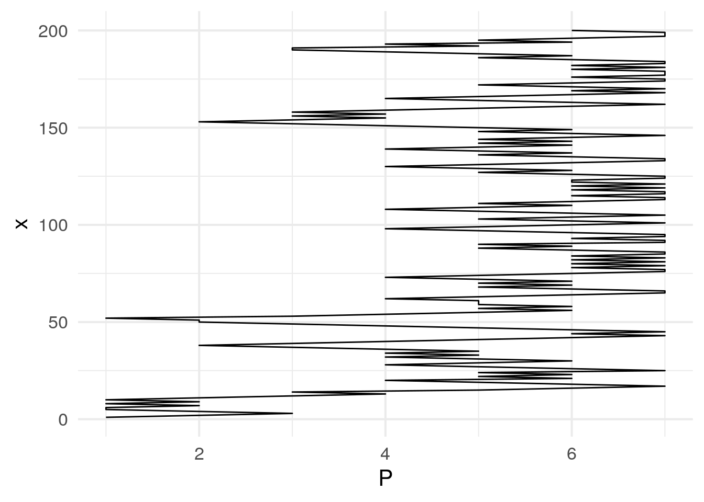
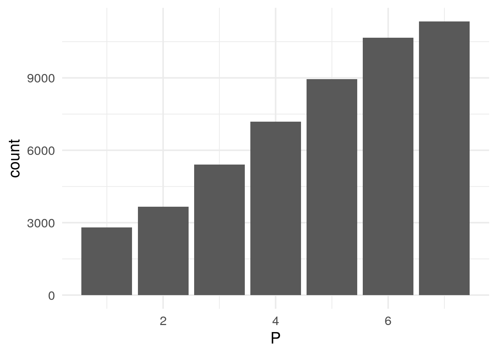
## [1] 4.86236## [1] 1.798514.5 El algoritmo de Metropolis-Hasting
El ejemplo anterior era bastante sencillo pero demuestra que se puede encontrar el mejor estimador posible simplemente ejecutando una y otra vez maximizando la estadía en los lugares más poblados.
En este ejemplo la función a maximizar es la cantidad de personas \(P(\theta)=\theta\), pero en general nuestro objetivo será maximizar la distribución posterior \(f(\theta| \text{ datos })\).
En palabras simples el algoritmo de Metropoli Hasting es
- Simule un valor \(\theta^{*}\) de una densidad de propuesta \(p\left(\theta^{*} | \theta^{t-1}\right)\)
- Estime la razón \[ R=\frac{f\left(\theta^{*}\right) p\left(\theta^{t-1} | \theta^{*}\right)}{f\left(\theta^{t-1}\right) p\left(\theta^{*} | \theta^{t-1}\right)} \]
- Estima la probabilidad de aceptación \(p_{\text {moverse }}=\min \{R, 1\}\).
- Tome \(\theta^{t}\) tal que \(\theta^{t}=\theta^{*}\) con probabilidad \(p_{\text {moverse }}\); en otro caso \(\theta^{t}=\) \(\theta^{t-1}\)
El algoritmo de Metropolis-Hastings se puede construir de muchas formas, dependiendo de la densidad de proposición
Si esta es independiente de las elecciones anteriores entonces, \[ p\left(\theta^{*} | \theta^{t-1}\right)=p\left(\theta^{*}\right) \]
Otras formas es escoger \[ p\left(\theta^{*} | \theta^{t-1}\right)=h\left(\theta^{*}-\theta^{t-1}\right) \] donde \(h\) es simetrica alrededor del origen. En este tipo de cadenas, la razón \(R\) tiene la forma \[ R=\frac{f\left(\theta^{*}\right)}{f\left(\theta^{t-1}\right)} \]
Una última opción es tomar \[ \theta^{*}=\theta^{t-1}+ Z \]
donde \(Z\) es una normal centrada con cierta estructura de varianza.
Retomemos el ejemplo del viajero. Supongamos que ahora existen una cantidad infinita de lugares a los que puede ir y que la población de cada isla es proporcional a la densidad posterior. Además, el viajero podría saltar a cualquier isla que quisiera y su probabilidad de salto cae de forma continua en el intervalo \([0,1]\).
Para hacer este ejemplo concreto, el viajero no conoce cuál es su probabilidad de salto \(\theta\) pero sabe que ha tirado la moneda \(N\) veces y observado \(z\) exitos. Por lo tanto tendremos una verosimilitud de \(f(z, N | \theta)=\theta^{z}(1-\theta)^{(N-z)}\).
La previa será dada por \(f(\theta)=\operatorname{beta}(\theta | a, b)\).
Los saltos serán gobernados por una normal centrada con media \(\sigma\) de modo que \(\Delta \theta \sim \mathcal{N}\left(0,\sigma^{2}\right)\).
Entonces el algoritmo de Metropolis Hasting se puede reformular como
- Simule un valor de salto\(\Delta \theta \sim \mathcal{N}\left(0,\sigma^{2}\right)\) y denote \(\theta^{t} = \theta^{t} + \Delta\theta\).
Probabilidad de aceptación $ p_{}$ \[\begin{align*} p_{\text {moverse }} & =\min \left(1, \frac{P\left(\theta_{\ast}\right)}{P\left(\theta_{t-1}\right)}\right) \\ & =\min \left(1, \frac{p\left(D | \theta_{\ast}\right) p\left(\theta_{\ast}\right)}{p\left(D | \theta_{t-1}\right) p\left(\theta_{t-1}\right)}\right) \\ & =\min \left(1, \frac{\operatorname{Bernoulli}\left(z, N | \theta_{\ast}\right) \operatorname{beta}\left(\theta_{\ast} | a, b\right)}{\operatorname{Bernoulli}\left(z, N | \theta_{t-1}\right) \operatorname{beta}\left(\theta_{t-1} | a, b\right)}\right) \\ & =\min \left(1, \frac{\theta_{\ast}^{z}\left(1-\theta_{\ast}\right)^{(N-z)} \theta_{\ast} \left(1-\theta_{\ast}\right)^{(b-1)} / B(a,b)}{\theta_{t-1}^{z}\left(1-\theta_{t-1}\right)^{(N-z)} \theta_{t-1}^{(a-1)}\left(1-\theta_{t-1}\right)^{(b-1)} / B(a, b)}\right) \end{align*}\]
Tome \(\theta_{t}\) tal que \(\theta_{t}=\theta_{*}\) con probabilidad \(p_{\text {moverse }} ;\) en otro caso \(\theta_{t}=\) \(\theta_{t-1}\)
En el ejemplo del viajero queremos ver la probabilidad \(\theta\) de que salte al siguiente destino. Tomemos \(\sigma=0.2\) y supongamos que se ha visto que el viajero de \(N=20\) y \(z=14\) éxitos. Por cuestiones de practicidad se tomará \(\theta_0 = 0.1\).
# Carga de datos observados
datos_observados <- c(rep(0, 6), rep(1, 14))
# Función de verosimilitud Binomial
verosimilitud <- function(theta, data) {
z <- sum(data)
N <- length(data)
pDatosDadoTheta <- theta^z * (1 - theta)^(N - z)
# Es para asegurarse que los datos caigan en [0,1].
pDatosDadoTheta[theta > 1 | theta < 0] <- 0
return(pDatosDadoTheta)
}
# densidad previa
previa <- function(theta) {
pTheta <- dbeta(theta, 1, 1)
# Es para asegurarse que los datos caigan en [0,1].
pTheta[theta > 1 | theta < 0] <- 0
return(pTheta)
}
# densidad posterior
posterior <- function(theta, data) {
posterior <- verosimilitud(theta, data) * previa(theta)
return(posterior)
}
n_pasos <- 50000
trayectoria <- rep(0, n_pasos)
# Valor inicial
trayectoria[1] <- 0.01
n_aceptados <- 0
n_rechazados <- 0
sigma <- 0.2
for (t in 2:(n_pasos - 1)) {
pos_actual <- trayectoria[t]
salto_propuesto <- rnorm(1, mean = 0, sd = sigma)
proba_aceptacion <- min(1, posterior(pos_actual +
salto_propuesto, datos_observados)/posterior(pos_actual,
datos_observados))
# Aceptamos el salto?
if (runif(1) < proba_aceptacion) {
# Aceptados
trayectoria[t + 1] <- pos_actual + salto_propuesto
n_aceptados <- n_aceptados + 1
} else {
# Rechazos
trayectoria[t + 1] <- pos_actual
n_rechazados <- n_rechazados + 1
}
}df <- data.frame(x = 1:n_pasos, P = trayectoria)
ggplot(df[1:500, ]) + geom_line(aes(x, P), size = 0.5) +
coord_flip() + theme_minimal(base_size = 16)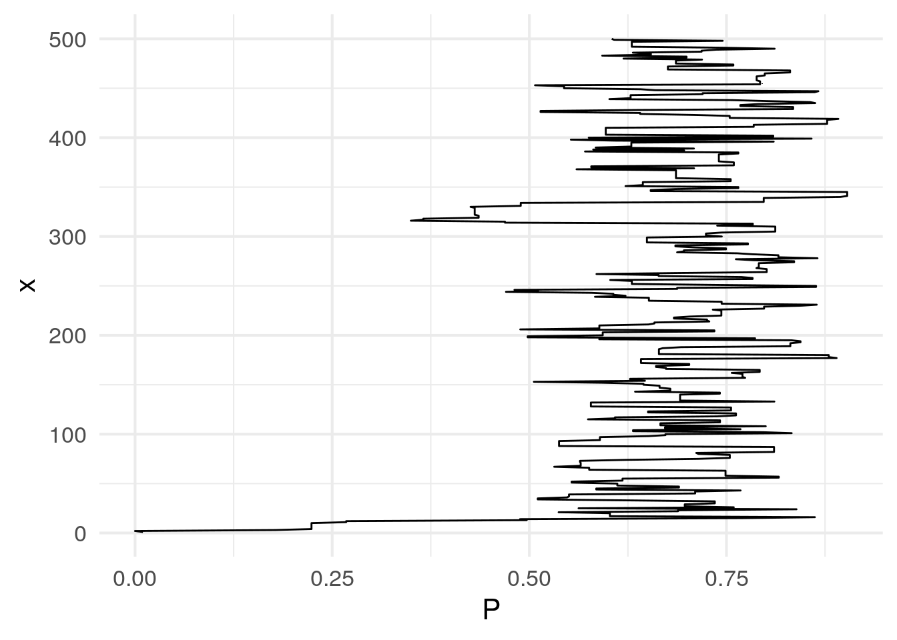
ggplot(df) + geom_histogram(aes(P, y = ..density..),
color = "white") + theme_minimal(base_size = 16)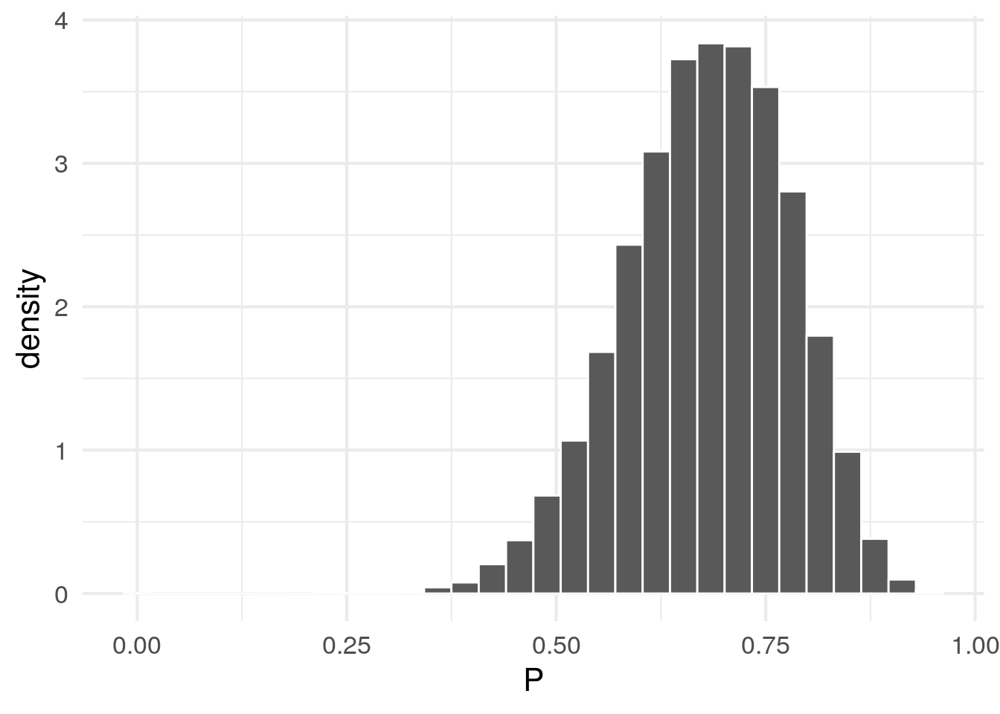
Hall, Peter. 1987. “On Kullback-Leibler Loss and Density Estimation.” The Annals of Statistics 15 (4): 1491–1519. https://doi.org/10.1214/aos/1176350606.
Härdle, Wolfgang, Axel Werwatz, Marlene Müller, and Stefan Sperlich. 2004. Nonparametric and Semiparametric Models. Springer Series in Statistics. Berlin, Heidelberg: Springer Berlin Heidelberg. https://doi.org/10.1007/978-3-642-17146-8.
Kruschke, John K. 2014. “Doing Bayesian data analysis: A tutorial with R, JAGS, and Stan, second edition.” In Doing Bayesian Data Analysis: A Tutorial with R, Jags, and Stan, Second Edition, 1–759.
References
Kruschke, John K. 2014. “Doing Bayesian data analysis: A tutorial with R, JAGS, and Stan, second edition.” In Doing Bayesian Data Analysis: A Tutorial with R, Jags, and Stan, Second Edition, 1–759.